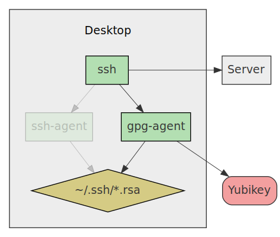

- Published
- 2017-09-29
- NixOS release
- 17.03
In this article we will setup NixOS to use GPG-keys for SSH authentication, while storing the keys securely on a Yubikey. When I did this myself, I had to read a lot of different sources to understand all the steps of this process. So to save some time for someone else I compiled all these details into a (hopefully) comprehensible article.
GPG basics
A SSH key pair consists of a public key (stored on the server) and a private key (stored on the client). The anatomy of these keys are simple, they are just RSA keys that don't contain any meta data used in the authentication process.
Anatomy of GPG keys
GPG keys on the other hand, are much more complex, they are more like a data structure with different components than a "key". In essence a GPG key consists of 4 parts:
- Primary key pair
- Also called master key
- Primary identity
- Also just called user identity or uid
- Extra identities
- Extra user identities linked to the primary key pair
- Subkey pairs
- Extra keys derived from the primary key pair

In earlier versions when you created a GPG key, it would only consist of the primary key pair and the primary identity. Which probably why it is called a GPG key, and not something like GPG structure or object.
Identities
When you create a new GPG key, you are asked for the name and email of the user that they key belongs to. When creating the actual the GPG key, a signature is created from the name and email using the primary private key. This way the identity is associated with the primary key pair.
The extra identities is there so that you can associate other email adresses to your primary key pair. For example, you might want to have both your private and work email associated with the key for simplicity.
Subkey pairs
Subkey pairs are basically normal key pairs that has a signature that associates them to the primary key pair. When a subkey pair is created, the primary private key is used to create this signature.
The reason why you would want to create subkey pairs is because in GPG you can specify what actions a key pair is allowed to perform. There are 4 different actions a key pair can perform. The most powerful action is called Certify, which allows a key pair to create subkey pairs from itself. A subkey pair is just a key pair but with a signature that associates it to another key pair. The primary key pair will therefor always have the Certify capability, so that it can create subkey pairs.
There are 3 other actions a key pair can perform:
- Sign
- Signing files, emails, etc.
- Encrypt
- Encrypting files, emails, etc.
- Authenticate
- Authenticating against external services, such as SSH
Normally you remove all actions but the Certify action from the primary key pair and then create subkey pairs for each of the other 3 actions. This way you can use the 3 subkey pairs in your day-to-day work, and store the primary key pair offline safely.
Smart cards
A smart card (like Yubikey) is basically a physical device that can store private keys and perform the cryptographic operations directly on the device. Smart cards are designed so that once the private keys are imported to the device they cannot be extracted.
So if your computer would become compromised, the attacker would not be able to get the private key since it is stored outside the computer and no cryptographic operations are performed on the computer. The only thing the attacker would be able to extract is the input and output of the device.
Our goal
Now that we better understand how GPG works, lets define the goal of this article:
- Create a GPG key
- With a primary keypair that can only Certify
- With a single user identity
- With a subkey pair that can only Sign
- With a subkey pair that can only Encrypt
- With a subkey pair that can only Authenticate
- Backup the primary key pair and it's subkey pairs offline on a USB-stick
- Configure our Yubikey
- Move the 3 subkey pairs to our Yubikey
- Configure NixOS to use GPG and our Yubikey for SSH authentication:

Figure 2: Agent replacement
Lets start by creating our new key!
Creating a new key
All key creation should be performed on a live booted machine without network access. A common way is to live boot Tails and perform all key generation steps inside it. Then copy the generated keys to a USB-stick that is kept in a safe place offline. From here on out all commands should be performed on a live booted Tail machine without network access.
Like mentioned in the goals section, we'll start by creating a GPG key that has primary key pair that can only Certify. To start the process we run:
$ gpg2 --expert --full-generate-key
(We use the flag --expert and --full-generate-key to get all available
options when generating our key.)
The first prompt asks what kind of key we want to generate, here we select (8) RSA (set your own capabilities), so that we get to choose what actions the key can perform. In the actions prompt we untoggle all actions except for Certify. In the keysize prompt we input 4096 bits. The Yubikey supports storing keys that are 4096-bits so we will use 4096 bits on all key pairs.
After the GPG key has been created we can verify that it actually exists:
$ gpg2 --list-keys
gpg: checking the trustdb
gpg: marginals needed: 3 completes needed: 1 trust model: pgp
gpg: depth: 0 valid: 1 signed: 0 trust: 0-, 0q, 0n, 0m, 0f, 1u
gpg: next trustdb check due at 2018-09-17
/home/me/.gnupg/pubring.kbx
----------------------------
pub rsa4096 2017-09-17 [C] [expires: 2018-09-17]
FAB89F7D27C399063F600B036B3D0050CAE0C3C4
uid [ultimate] Richard Zetterberg <richard.zetterberg@example.com>
Next step is to create our 3 subkey pairs from that primary key pair. We use the key ID from the previous step and run:
$ gpg2 --expert --edit-key FAB89F7D27C399063F600B036B3D0050CAE0C3C4
When starting that command we are presented with a overview of the key and
a gpg> prompt that accept commands. We start by entering:
gpg> addkey
We are now shown the key creation prompt again. This time we also select (8) RSA (set your own capabilities) for key type. However, this time we only select Sign capability. Same key size as before, 4096-bits.
After creating our Sign subkey, we should see the overview and the gpg>
command prompt again:
sec rsa4096/6B3D0050CAE0C3C4
created: 2017-09-17 expires: 2018-09-17 usage: C
trust: ultimate validity: ultimate
ssb rsa4096/425E1FD67112482A
created: 2017-09-17 expires: 2018-09-17 usage: S
[ultimate] (1). Richard Zetterberg <richard.zetterberg@example.com>
gpg>
By the way, when gpg list keys, it uses the following terminology:
- sec
- SECret key
- ssb
- Secret SuBkey
- pub
- PUBlic key
- sub
- public SUBkey
Next we perform the same addkey steps for the separate Encrypt and
Authenticate keys. When done we should see this:
sec rsa4096/6B3D0050CAE0C3C4
created: 2017-09-17 expires: 2018-09-17 usage: C
trust: ultimate validity: ultimate
ssb rsa4096/425E1FD67112482A
created: 2017-09-17 expires: 2018-09-17 usage: S
ssb rsa4096/5993DBCB1C9AC33B
created: 2017-09-17 expires: 2018-09-17 usage: E
ssb rsa4096/8DB918AB30C19F1C
created: 2017-09-17 expires: 2018-09-17 usage: A
[ultimate] (1). Richard Zetterberg <richard.zetterberg@example.com>
gpg>
We then save our changes:
gpg> quit Save changes? (y/N) y
Now when listing keys we will see our primary key pair and 3 subkey pairs:
$ gpg2 --list-keys
/home/me/.gnupg/pubring.kbx
----------------------------
pub rsa4096 2017-09-17 [C] [expires: 2018-09-17]
FAB89F7D27C399063F600B036B3D0050CAE0C3C4
uid [ultimate] Richard Zetterberg <richard.zetterberg@example.com>
sub rsa4096 2017-09-17 [S] [expires: 2018-09-17]
sub rsa4096 2017-09-17 [E] [expires: 2018-09-17]
sub rsa4096 2017-09-17 [A] [expires: 2018-09-17]
Backing up the keys
Next we mount our USB-stick that we will back up our keys on and export the keys by running:
$ gpg2 --armor --output /path/to/usb/stick/secret-keys.txt \
--export-secret-key richard.zetterberg@example.com
This will export both the primary key and all its subkeys. Now we can unmount the USB-stick and store that in a safe place.
Before storing our public keys on our Yubikey, we need to remove the primary key from our GPG key so that it only exists offline on our USB-stick. To do this we:
- Export subkeys only
- Delete the whole key
- Re-import the exported subkeys
This will leave us with a GPG key that has all 3 subkeys but not the primary key.
First we export the subkeys:
$ gpg2 --armor --output ./secret-subkeys.txt \
--export-secret-subkeys richard.zetterberg@example.com
Then we delete the whole key:
$ gpg2 --delete-secret-key richard.zetterberg@example.com
We answer Delete key for all prompts that ask if we should delete the subkeys.
After doing this we should not see any keys when running gpg2 --list-keys.
Finally we import the subkeys again:
$ gpg2 --import ./secret-subkeys.txt
After the subkeys have been imported we should see the following when running
gpg2 --list-secret-keys:
$ gpg2 --list-secret-keys
/home/me/.gnupg/pubring.kbx
----------------------------
sec# rsa4096 2017-09-17 [C] [expires: 2018-09-17]
FAB89F7D27C399063F600B036B3D0050CAE0C3C4
uid [ultimate] Richard Zetterberg <richard.zetterberg@example.com>
ssb rsa4096 2017-09-17 [S] [expires: 2018-09-17]
ssb rsa4096 2017-09-17 [E] [expires: 2018-09-17]
ssb rsa4096 2017-09-17 [A] [expires: 2018-09-17]
Note that instead of saying sec, it now says sec#. This means that the key is now stored somewhere else. Now we are ready to store the subkeys on our Yubikey.
Importing subkeys on Yubikey
Before importing the subkeys on our Yubikey we need to configure it. We plug in the Yubikey and check that we can communicate with it:
$ gpg-connect-agent --hex "scd apdu 00 f1 00 00" /bye D[0000] 04 03 04 90 00 ..... OK
We then configure the Yubikey to be used as a Smart card:
$ ykpersonalize -m82 Firmware version 4.3.4 Touch level 773 Program sequence 1 The USB mode will be set to: 0x82 Commit? (y/n) [n]: y
Now that the Yubikey is configured as a smart card, we can import our subkeys
to it, by running --edit-key for our key:
$ gpg2 --edit-key FAB89F7D27C399063F600B036B3D0050CAE0C3C4
gpg (GnuPG) 2.1.18; Copyright (C) 2017 Free Software Foundation, Inc.
This is free software: you are free to change and redistribute it.
There is NO WARRANTY, to the extent permitted by law.
Secret key is available.
pub rsa4096/6B3D0050CAE0C3C4
created: 2017-09-17 expires: 2018-09-17 usage: C
trust: ultimate validity: ultimate
ssb rsa4096/425E1FD67112482A
created: 2017-09-17 expires: 2018-09-17 usage: S
ssb rsa4096/5993DBCB1C9AC33B
created: 2017-09-17 expires: 2018-09-17 usage: E
ssb rsa4096/8DB918AB30C19F1C
created: 2017-09-17 expires: 2018-09-17 usage: A
[ultimate] (1). Richard Zetterberg <richard.zetterberg@example.com>
gpg>
In the gpg> prompt we type:
gpg> key 1 gpg> keytocard
This will select the first subkey and import it to our Yubikey. Gpg will ask us where to store it, we just select the appropriate usage. When storing the key on the Yubikey we will be asked for the admin pin, which is 12345678 by factory default (here's how you change it).
We then import the second subkey:
gpg> key 2 gpg> keytocard
And the last subkey:
gpg> key 3 gpg> keytocard
After all 3 keys have been imported we quit and save:
gpg> quit Save changes? (y/N) y
Now the subkeys have been moved from the live booted computer into the Yubikey. If we list the keys we will see that they now are pointers to a smart card and not stored locally:
$ gpg2 --list-secret-keys
/home/me/.gnupg/pubring.kbx
----------------------------
sec# rsa4096 2017-09-17 [C] [expires: 2018-09-17]
FAB89F7D27C399063F600B036B3D0050CAE0C3C4
uid [ultimate] Richard Zetterberg <richard.zetterberg@example.com>
ssb> rsa4096 2017-09-17 [S] [expires: 2018-09-17]
ssb> rsa4096 2017-09-17 [E] [expires: 2018-09-17]
ssb> rsa4096 2017-09-17 [A] [expires: 2018-09-17]
The > suffix signifies "pointer to key".
Using the Yubikey
Now that the Yubikey has been configured and contains the subkeys we can start using it. To test this out we first need to export the public key:
$ gpg2 --armor --export richard.zetterberg@example.com > public_key
To simulate that we want to start using our Yubikey on a new computer we
remove the .gnupg directory:
rm -rf ~/.gnupg
Now when we run gpg2 --list-secret-keys or gpg2 --list-keys we will not see
any keys:
$ gpg2 --list-secret-keys gpg: directory '/home/me/.gnupg' created gpg: new configuration file '/home/me/.gnupg/dirmngr.conf' created gpg: new configuration file '/home/me/.gnupg/gpg.conf' created gpg: keybox '/home/me/.gnupg/pubring.kbx' created $ gpg2 --list-keys
To start using the Yubikey on a new computer we need the public key. Sadly the Yubikey cannot store the public key, so we either need to bring it with us to the new computer or host it somewhere on the internet.
Bringing the public key along
Let's suppose we have the public key with us, we can just import it:
$ gpg2 --import ./public_key gpg: /home/me/.gnupg/trustdb.gpg: trustdb created gpg: key 6B3D0050CAE0C3C4: public key "Richard Zetterberg <richard.zetterberg@example.com>" imported gpg: Total number processed: 1 gpg: imported: 1
After importing the public key, we can list the public keys, but not the secret keys:
$ gpg2 --list-public-keys
/home/me/.gnupg/pubring.kbx
----------------------------
pub rsa4096 2017-09-17 [C] [expires: 2018-09-17]
FAB89F7D27C399063F600B036B3D0050CAE0C3C4
uid [ unknown] Richard Zetterberg <richard.zetterberg@example.com>
sub rsa4096 2017-09-17 [S] [expires: 2018-09-17]
sub rsa4096 2017-09-17 [E] [expires: 2018-09-17]
sub rsa4096 2017-09-17 [A] [expires: 2018-09-17]
$ gpg2 --list-secret-keys
This is because we need to tell gpg that the secret keys for those public keys are stored on our Yubikey:
$ gpg2 --card-status
We'll see a lot of output of about the Yubikey, and at the end we see the keys stored on it:
sec# rsa4096/6B3D0050CAE0C3C4 created: 2017-09-17 expires: 2018-09-17
ssb> rsa4096/425E1FD67112482A created: 2017-09-17 expires: 2018-09-17
card-no: 0006 05578763
ssb> rsa4096/5993DBCB1C9AC33B created: 2017-09-17 expires: 2018-09-17
card-no: 0006 05578763
ssb> rsa4096/8DB918AB30C19F1C created: 2017-09-17 expires: 2018-09-17
card-no: 0006 05578763
After doing that we now see the secret keys in the list:
$ gpg2 --list-secret-keys
/home/me/.gnupg/pubring.kbx
----------------------------
sec# rsa4096 2017-09-17 [C] [expires: 2018-09-17]
FAB89F7D27C399063F600B036B3D0050CAE0C3C4
uid [ unknown] Richard Zetterberg <richard.zetterberg@example.com>
ssb> rsa4096 2017-09-17 [S] [expires: 2018-09-17]
ssb> rsa4096 2017-09-17 [E] [expires: 2018-09-17]
ssb> rsa4096 2017-09-17 [A] [expires: 2018-09-17]
Installing and configuring dependencies
Now that we have created our GPG key and configured our Yubikey it's time to configure NixOS to use the Yubikey.
First, we'll make sure all tools and services are installed and configured. To
make it easier for ourselves we will create a new file called yubikey-gpg.nix
and import it in our configuration.nix:
/etc/nixos/configuration.nix
{ config, pkgs, ... }:
{
imports = [
./yubikey-gpg.nix
];
}
Yubikey personalization tool
The first tool we will install is the Yubikey Personalization tool. This tool is used to communicate with the yubikey to update its configuration:
/etc/nixos/yubikey-gpg.nix
{ config, lib, pkgs, ... }:
{
environment.systemPackages = with pkgs; [
yubikey-personalization
];
}
After running nixos-rebuild switch we will have the command ykpersonalize
available. After plugging in our Yubikey we can use ykpersonalize -V to check
the firmware version of it:
$ ykpersonalize -V USB error: Access denied (insufficient permissions)
The reason we are seeing this error is because the device manager udev doesn't
allow access to USB-devices unless there is a rule for it. The good news is that
the ykpersonalize program comes packaged with a udev rule file that allows user
access the device.
In NixOS there is a simple way of using udev rules packaged with a nixpkg. You
simply supply services.udev.packages with a list of packages you want to use
udev rules from:
/etc/nixos/yubikey-gpg.nix
{ config, lib, pkgs, ... }:
{
environment.systemPackages = with pkgs; [
yubikey-personalization
];
services.udev.packages = with pkgs; [
yubikey-personalization
];
}
The nixpkgs added to this list simply needs to populate the directory
$out/lib/udev/rules.d with udev rule files, and then NixOS picks up these files
and adds them to /etc/udev/rules.d when nixos-rebuild is run.
We can see that the yubikey-personalization nixpkg installs a udev rule
into this directory.
After updating yubikey-gpg.nix and running nixos-rebuild switch we need to
tell udev to reload the rules. We can either do that by rebooting or running the
following commands:
sudo -- udevadm control --reload-rules && udevadm trigger
Then we can re-run ykpersonalize and we'll get the firmware version of our
Yubikey:
$ ykpersonalize -V Firmware version 4.3.4 Touch level 773 Program sequence 1 1.17.3
GnuPG
After we know that we can communicate with our Yubikey we'll install GnuPG and
the needed tools to use the Yubikey as a smartcard. Besides installing GnuPG we
need to enable pcscd, which is a daemon that exposes a generic API that allows
programs to communicate with smartcards without knowing the specifics about the
device.
/etc/nixos/yubikey-gpg.nix
{ config, lib, pkgs, ... }:
{
services.pcscd.enable = true;
environment.systemPackages = with pkgs; [
gnupg
yubikey-personalization
];
services.udev.packages = with pkgs; [
yubikey-personalization
];
}
After running nixos-rebuild switch we now have everything to use GnuPG and
Yubikey together.
GPG/SSH Agent
The last step is to setup gpg-agent instead of ssh-agent. Basically
gpg-agent emulates ssh-agent but lets you use normal SSH keys and
GPG keys.
So ssh-add ~/.ssh/id.rsa will work like before, so you don't
need to change your workflow if you just want to try out using GnuPG for
SSH authentication.
/etc/nixos/yubikey-gpg.nix
{ config, lib, pkgs, ... }:
{
programs.ssh.startAgent = false;
services.pcscd.enable = true;
environment.systemPackages = with pkgs; [
gnupg
yubikey-personalization
];
environment.shellInit = ''
gpg-connect-agent /bye
export SSH_AUTH_SOCK=$(gpgconf --list-dirs agent-ssh-socket)
'';
services.udev.packages = with pkgs; [
yubikey-personalization
];
}
Now after we run nixos-rebuild switch we'll have to manually kill ssh-agent,
then log in and out. After that we check that gpg-agent is running and not
ssh-agent:
$ ps aux | grep ssh-agent $ ps aux | grep gpg-agent ps aux | grep gpg-agent me 1505 0.0 0.0 348084 3160 ? Ss 07:12 0:03 gpg-agent --homedir /home/me/.gnupg --use-standard-socket --daemon
We can use ssh-add like we did before, and we'll see the cached keys
along with our Yubikey card:
$ ssh-add -L ssh-rsa [truncated for readability] /home/me/.ssh/id.rsa ssh-rsa [truncated for readability] cardno:0000239725
Now we only need to export our public key and put it on the server:
$ gpg2 --export-ssh-key richard.zetterberg@example.com > ~/.ssh/yubikey.pub
Then you just need to change your SSH config to use that public key and GPG will handle everything else for you:
Host myserver
Hostname 8.8.8.8
User admin
IdentityFile ~/.ssh/yubikey.pub